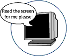

Index
- Description
- Points to Ponder
- Key Features of Talking Browsers
- Key Features of Talking Emails
- Talking Browsers
- Talking Emails
- Additional links to lists of Freeware Programs
This list of products is for reference purposes only and does not reflect endorsement by the IDRC
Description
Talking browser software allows the user to navigate the Internet with the added capability of text-to-speech technology (TTS). This software will read the content of any webpage aloud to the user by converting the text on the screen into spoken words.
Talking email software also uses TTS technology. This software will notify the user of new incoming messages and it will read the content of the messages aloud to the user.
Points to Ponder- Questions to consider when shopping for talking browsers and talking email software
- Does it read images and/or videos?
- Does it support different languages?
- Is it compatible with your computer’s platform?
- Does it have the option of changing the reading voice/ speed?
- Can the reading voice be trained?
- Is there a Braille output option?
Key Features of Talking Browsers
- Uses text-to-speech technology
- It will read the content of any Web page (menus, links, headers etc.)
Key Features of Talking Emails
- Uses text-to speech technology
- It will notify the user of new incoming messages
- Reads emails messages aloud to the user
Talking Browsers
- WebbIE is a free download for Microsoft Windows. This allows you to speed up your browsing if you don’t use images. And for visually impaired users, there is the ability to zoom, set your own font sizes, and colours for every web page.
- Simply Web 2000> is a speech enabled accessible web browser that allows for easy navigation of complex pages by blind users. This software is available for free.
- Arilington Talking Browser is a secure and customizable web browser with speech capability. It will start reading automatically the displayed web pages.
- BrookesTalk developed by Oxford Brookes University is a function key driven web browser for blind and visually impaired users, providing keyboard only accessibility using the function keys. This is a free download.
- Accessibility Browser/A-Browser from IBM
- Thunder is a talking browser that reads emails and it can also read aloud as you type. This is a free download.
- Inform Audio Software is ideal for a blind or partially sighted persons who want to start using a computer. It lets you listen to web pages, scanned documents and audio CDs with the use of simple keyboard controls.
- WordRead Plus Reader ideal for anyone who can see and control the mouse and those who have dyslexia. This will automatically read web pages, menu items, and “objects” by hovering the mouse over the item.
- Emacspeak- The complete audio desktop provides complete eyes-free access to daily computing tasks by providing fluent spoken access to local and remote electronic information. This is a free download.
- Sensus Internet Browser has been discontinued but the browser can still be downloaded and used on an unsupported basis.
- WebSpeak from Productivity Works is designed for users who want to access the Internet in a non-visual or combined auditory and visual way. It is ideal for people who are blind or have partial vision, people with dyslexia or learning difficulties, and those who are learning a new language.
- Aurora Suite 2005 in addition to being a talking browser this software will also help people with learning disabilities write and spell better, it can also read your emails aloud. There are 3 different editions each with their own special features:
- Professional Edition provides access to Aurora Suite’s full feature set for users with learning disabilities, dyslexia, and users who need augmentative communication.
- Standard Edition provides the essential features for dyslexia, learning disabilities, and basic support for augmentative communication.
- Value Edition is the most affordable pakage that provides the core features needed for people who have learning disabilities.
- Squad is for Yahoo! Mail. The new developments include visually impaired impaired access to mail on all standard screen readers with text-to-speech, sound icons and special braille output.
- Talking Email is an email notifier that allows you to hear your incoming messages as soon as they arrive with animated characters reading them to you.
- Email Talker has high quality sound with fully adjustable speaking speed, picth, and voice. This software is also a screen reader and a talking clock
- Petcentric Doggie-Mail is a new interactive email program with talking dogs. This allows the user to send a prerecorded message, type in their own message and choose a voice, or record their own message in their own voice.
- MailAssistant can also be used to read web pages, documents, clipboard, or any kind of text. Mail assistant is also available in British English, Dutch, French, German, Italian, Japanese, Korean, Portuguese (Brazilian), Russian & Spanish languages.
- Speaking Email Deluxe is able to read email content of plain text, HTML and embedded HTML. It also allows you to send speaking and non-speaking emails as well.
- IcanEmail is designed for people with cogntive, visual, and physical challenges. It works with keyboards (IntelliKeys, BigKeys) or pointing devices (Magic Touchscreen, SAM-Joystick, SAM-Trackball) or CrossScanner for single switches. You can also create your own talking emails using Windows Outlook Express and Windows sound recorder.
Talking Emails
Additional Links to Lists of Freeware Programs
- Talking Icons -this site is a compilation of free talking add-ons for your computer.
- Talking Email- this is another collection of free talking email software available for downloading.
- Read Email Software- there is more free speaking email software here.
- Low Vision Software- this website has a collection of software downloads ideal for people with vision impairments
- Text-to-Speech Software- this website has a list of free text-to-speech software download